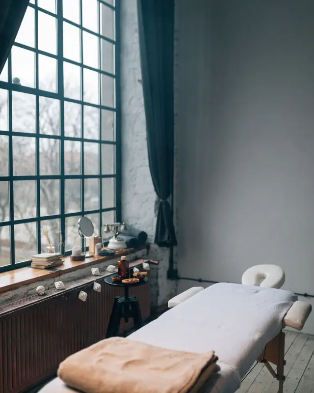
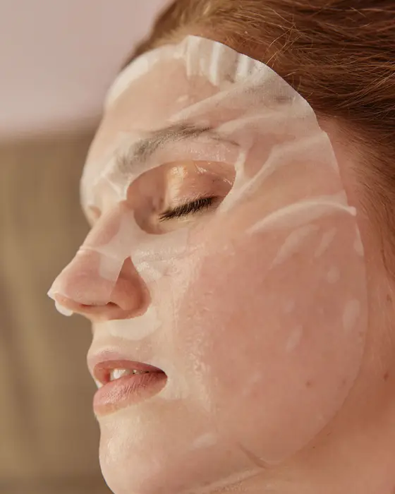
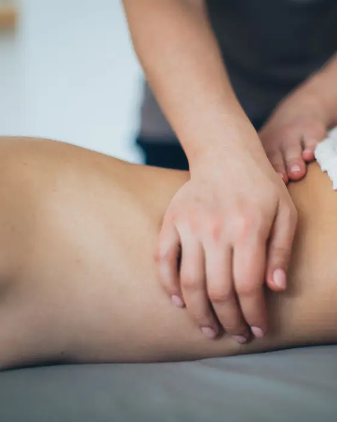

Clínica de estética nos Jardins
Pele cuidada sem pressa.
Atendemos uma cliente por vez. Você chega, a gente conversa sobre a sua pele e só depois começa.
Agendar pelo WhatsApp
Quem somos
Uma clínica pequena, de propósito.
Sou a Marina, esteticista. Abri a Seren porque cansei de atendimento com hora para acabar: uma cliente saindo enquanto a próxima já espera, o mesmo protocolo para todo mundo.
Aqui eu atendo com calma. Antes de qualquer tratamento, olho a sua pele e pergunto da sua rotina. Se o que você pediu não for o melhor para agora, eu falo.
O espaço é uma sala só, silenciosa e com luz natural. Você não divide o horário com ninguém.
Marina
-
Uma cliente por vez
Ninguém esperando na sala ao lado. O horário é todo seu.
-
Avaliação antes de tudo
Na primeira visita, conversamos e olhamos a sua pele antes de começar qualquer tratamento.
-
Produto escolhido para a sua pele
Nada de protocolo pronto. O que vai no seu rosto depende do que ele precisa naquele dia.
Tratamentos
Quatro cuidados, um de cada vez.
-
Limpeza de pele
- Para quem
- Pele oleosa ou mista, com cravos e poros entupidos. Com acne inflamada, avaliamos antes.
- Como é
- Higienização e esfoliação leve.
- Extração dos cravos, sem pressa.
- Máscara calmante e protetor solar.
- Duração
- Cerca de 1h a 1h30.
- Frequência
- A cada 30 a 45 dias.
- Depois
- Evite sol forte e maquiagem nas 24 horas seguintes.
-
Hidratação facial
- Para quem
- Pele ressecada, repuxando ou sem brilho, inclusive depois de muito sol ou ar-condicionado.
- Como é
- Limpeza suave.
- Máscara e ativos hidratantes, escolhidos na hora.
- Massagem leve até a pele absorver.
- Duração
- Cerca de 45 minutos a 1 hora.
- Frequência
- A cada 15 a 30 dias.
- Depois
- Mantenha o hidratante e o protetor solar em casa, todos os dias.
-
Drenagem linfática
- Para quem
- Pernas inchadas, sensação de peso e retenção de líquido. Em pós-operatório, só com liberação médica.
- Como é
- Conversa rápida sobre onde incomoda.
- Movimentos leves e ritmados, no corpo todo ou só nas pernas.
- Duração
- Cerca de 1 hora.
- Frequência
- 1 a 2 vezes por semana no começo. Depois, conforme a avaliação.
- Depois
- Beba bastante água ao longo do dia.
-
Design de sobrancelhas
- Para quem
- Quem quer um desenho que combine com o rosto, ou corrigir depois de deixar crescer.
- Como é
- Medição do rosto.
- Desenho a lápis, para você aprovar.
- Remoção dos fios com pinça e cera.
- Duração
- Cerca de 30 a 40 minutos.
- Frequência
- A cada 15 a 20 dias.
- Depois
- Evite maquiagem e sol direto na região por 24 horas.


Como agendar
Agendar é simples.
-
Mande uma mensagem
Pelo WhatsApp. Diga qual tratamento quer fazer, ou pergunte, se ainda estiver em dúvida.
-
Escolha o dia
Mandamos os horários livres da semana. Você escolhe o que encaixa na sua rotina.
-
Venha no horário
Na véspera, confirmamos por mensagem e mandamos o endereço.
Horários
Quando atendemos
- Segunda a sexta
- 9h às 19h
- Sábado
- 9h às 14h
- Domingo e feriados
- Fechado
Só com hora marcada.
Onde estamos
Jardins, São Paulo
Abrir no Google MapsVamos marcar o seu horário?
Chame no WhatsApp. A gente responde no horário de atendimento.
Agendar pelo WhatsApp